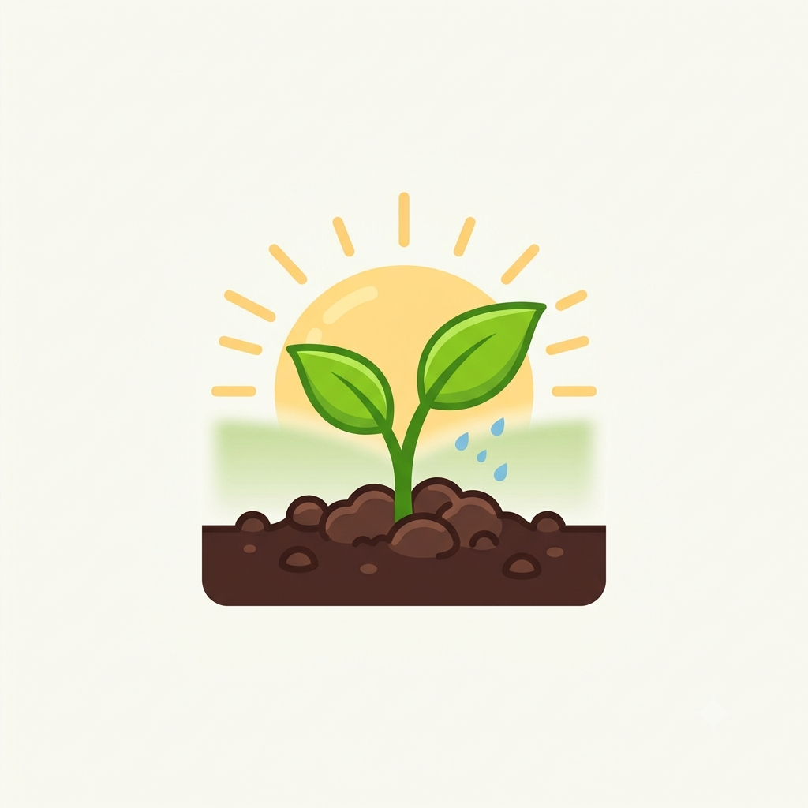

Bem-vindos ao Blog da Horta!
Por: Leonardo Gasparin Gusso
Boas-vindas ao nosso blog! Aqui vamos registrar cada passo, evolução e desafio da criação da Horta da turma 1D no Colégio CQC.
Acompanhe a nossa jornada na construção e cultivo da nossa horta escolar!

Por: Leonardo Gasparin Gusso
Boas-vindas ao nosso blog! Aqui vamos registrar cada passo, evolução e desafio da criação da Horta da turma 1D no Colégio CQC.

Por: Leonardo Gasparin Gusso
Data: 31/07/2026
Neste dia fomos pela primeira vez ao terreno para fazer a demarcação inicial do espaço onde iria ficar nossa horta escolar.

Por: Leonardo Gasparin Gusso
Data: 21/08/2026
Tivemos que escolher outro local para fazer a horta, já que o muro dos fundos do colégio está condenado. Hora de se replanejar!

Por: Leonardo Gasparin Gusso
Novas atualizações sobre a preparação do novo solo e plantio serão postadas em breve!

Por: Leonardo Gasparin Gusso
Acompanhe em breve os próximos passos do cultivo e rotina de regas da turma 1D.

Por: Leonardo Gasparin Gusso
Em breve traremos notícias sobre a colheita e resultados do nosso projeto!